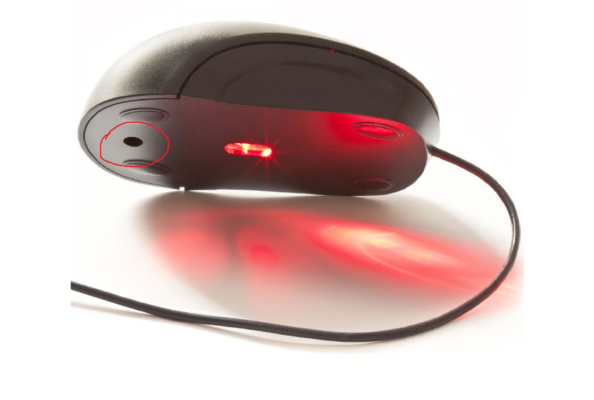
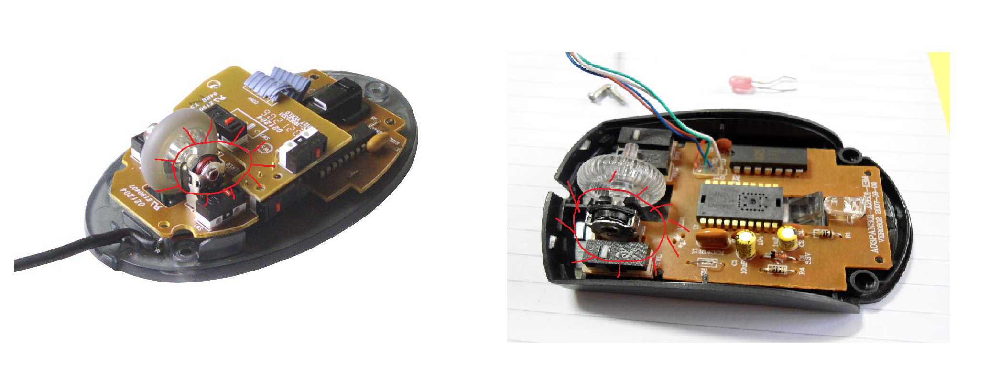

Почему колесико мыши работает некорректно?
Если при прокрутке страница прыгает вверх-вниз или скролл работает с перебоями, проблема в 90% случаев связана с энкодеромДатчик, преобразующий вращение колесика в электрические сигналы — механизмом, который отвечает за распознавание вращения колесика.
Как починить колесико мыши
Для ремонта вам понадобится:
- Крестовая отвертка (обычно PH0 или PH00)
- Изопропиловый спирт (или водка в крайнем случае)
- Ватные палочки или мягкая кисть
- Пинцет (не обязательно, но полезно)
Разборка мыши
Найдите все винты на нижней панели мыши. Они могут быть скрыты под наклейками или резиновыми ножками. Используйте подходящую отвертку, чтобы аккуратно их выкрутить.
Поиск энкодера
После разборки найдите механизм колесика. Энкодер обычно расположен рядом с осью колесика и выглядит как небольшая прямоугольная или круглая деталь с металлическими контактами.
Очистка контактов
Смочите ватную палочку в спирте и аккуратно протрите контакты энкодера. Прокрутите колесико несколько раз, чтобы спирт распределился по всем контактным поверхностям.
Сборка и проверка
После очистки дайте спирту полностью испариться (5-10 минут), затем соберите мышь в обратном порядке. Проверьте работу колесика в браузере или текстовом редакторе.
Что делать, если очистка не помогла?
В некоторых случаях проблема может быть более серьезной:
Возможные альтернативные решения:
- Попробуйте временно использовать программное решение для переназначения кнопок мыши
- Проверьте настройки скролла в Панели управления
- Подключите мышь к другому компьютеру для диагностики